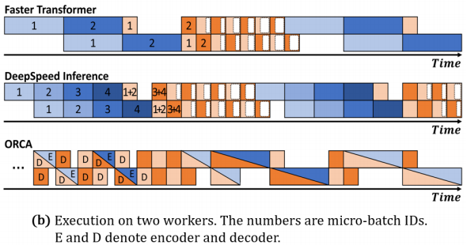
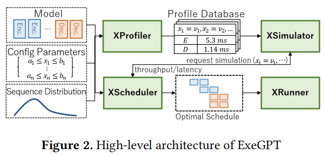

ExeGPT: Constraint-Aware ResourceScheduling for LLM inference
Hanyang University在ASPLOS 2024的一篇工作
一句话总结概括
背景
LLM inference：
- used in NLP tasks，就会有两个阶段，先encode，再decode。
- 对于Transformer-based models，encode和decode合一了，decoder-only models，其实就是prefill变成了encode。

蓝色是encode，橙色是decode
- Faster Transformer（PP=2，TP=1）：decode2需要等待encode2完成，有很长的气泡。且在后面decode部分，可以发现随着时间增长，已完成的没有退出，batch size并没有减小，导致有很多白框（浪费的计算时间）。
- DeepSpeed Inference同理，有很多小的白框
- Orca采用了iteration-level的调度，解决了这个白框的问题。但仍然没有考虑encode和decode时间差异较大的问题，导致采用PP的情况下有很多气泡。并且，将decode和encode放在一起，更加导致了其完成时间的不稳定。
先前工作存在的问题
- encode时间相比decode时间较长，采用iteration-level调度下decode过程时间不稳定，PP情况下可能会有很多气泡，会导致无法控制的延迟。
- 目前系统的inefficient trade-off mechanism between throughput and latency。假如要增大latency，就会选择缩小batch size，就会间接导致throughput缩小。
难点
解决方案
to read（可能的不同）:
- 他们有无考虑优先级，insensitive是否会阻碍sensitive的推理
- 他们没有利用offload和cpu来处理序列的动态性
- 他们是encoder decoder分离的架构，我们是chunked prefill架构（chunked prefill节省模型空间的好处……）
我们的出发点：
- 维持latency sensitive请求的slo的情况下，maximize best effort请求的吞吐量（parallel mlp，cpu，main memory）
- 在同时处理latency sensitive和best effort请求的情况下，高性价比地降低best effort对latency sensitive请求推理的影响（best effort不应该影响latency sensitive的请求进入）
- 针对latency sensitive和best effort的动态性，实时调整调度策略（offload）。
ExeGPT：给定了一个latency constraint，实现推理的最大throughput。
架构设计

- XProfiler
- 计算每层的attention kernel时间和其他函数的时间
- 同时测量TP和PP同步的时间（这两个时间不会互相影响）
- XSimulator
- Scheduling Strategies and Latency/Throughput Trade of
- Round-Robin Allocation
- Workload-Aware Allocation
- Scheduling with Sequence Length Distribution
- Optimizing Scheduling Algorithm
- Extensive Evaluation